An Interactive Journey Through Space Science, Exploration and Technology
Initialize SequenceConnecting core science concepts into one continuous storyline through planetarium visualizations and engaging hands-on activities.
"Mission Mars: From Earth to the Red Planet" is an interactive, mission-based space science outreach programme designed for Class XI Science stream students.
Hosted at the Pondicherry Planetarium, this event uses the digital dome projector to visually explore the Moon, Mars, and the Solar System while taking students on a journey from Earth departure to Mars surface exploration.
Class XI Science
50 Students
Planetarium
Full-Day Mission
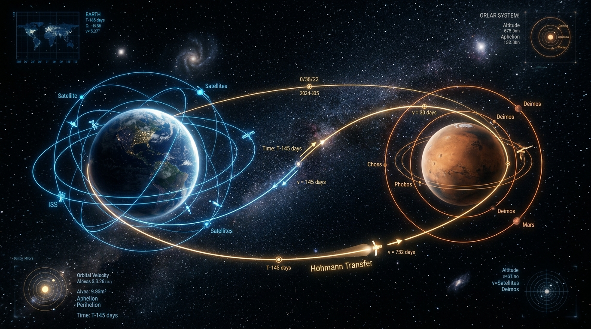
Core Concepts: How the Solar System and Earth formed. Inner rocky planets vs. outer gas giants. What makes Earth special.
Activity: Scale model demonstration showing the actual relative sizes and distances of the planets from the Sun.
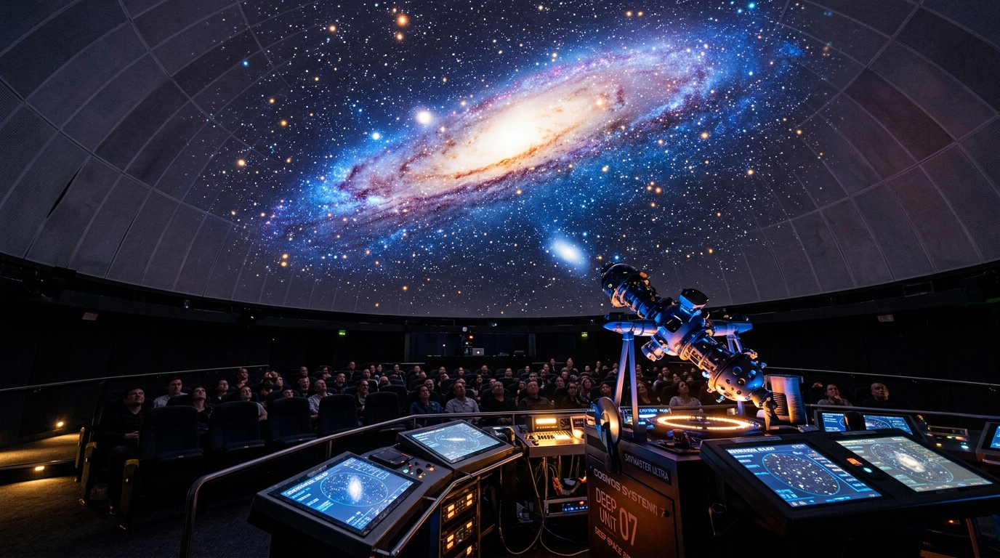
Core Concepts: How lenses and mirrors collect light (Refracting vs. Reflecting telescopes). Reading the rainbow of light (spectroscopy).
Activity: Simple diffraction grating activity to see emission lines and identify gases.
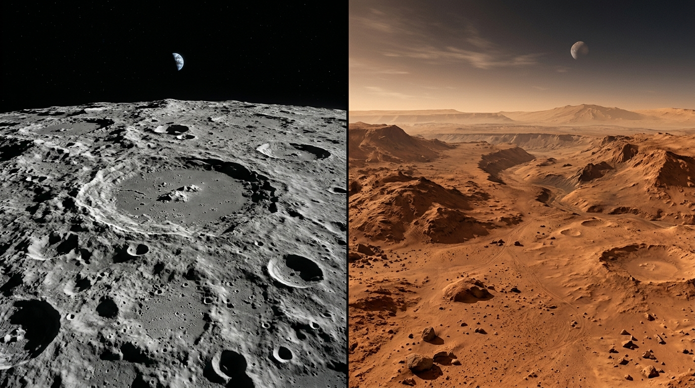
Core Concepts: Mars compared with Earth and the Moon's far side. Challenges of human exploration and India's Mangalyaan success.
Activity: Mars Map Landing Site Selection based on flat ground, sunlight, and presence of underground water ice.
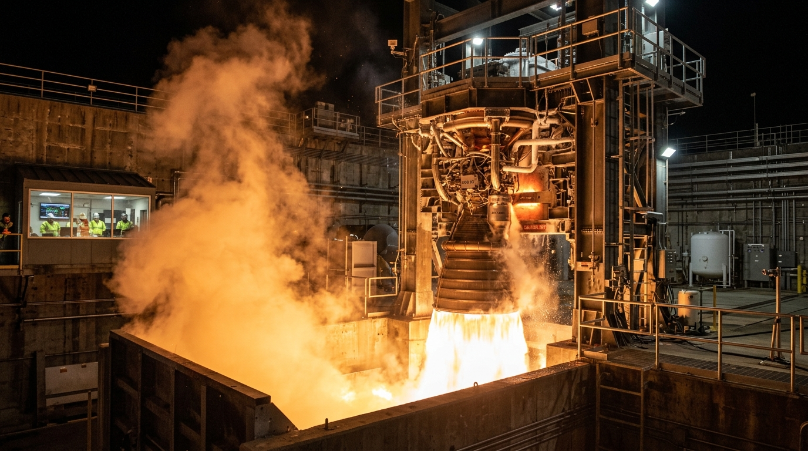
Core Concepts: Action and Reaction (Newton's 3rd Law). Why rockets have stages and carry their own fuel. Gravity and air resistance.
Activity: Building and launching paper/air rockets, adjusting fin shapes and balance to improve flight.
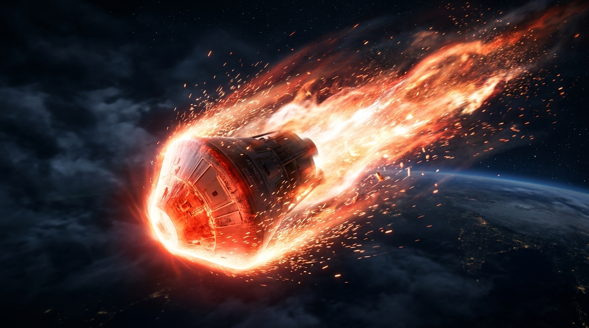
Core Concepts: Entering the Martian atmosphere at high speeds. Heat shields, parachutes, and landing thrusters in thin air.
Activity: Lander Drop Challenge: designing a safe landing capsule for a delicate payload to survive a drop onto rocky ground.
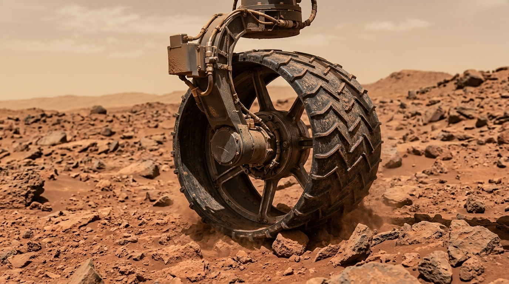
Core Concepts: Planetary rovers, special wheel suspensions, cameras, and obstacle sensors for automated decision making.
Activity: Demonstration of a working small robotic rover moving across simulated terrain to avoid rocks.
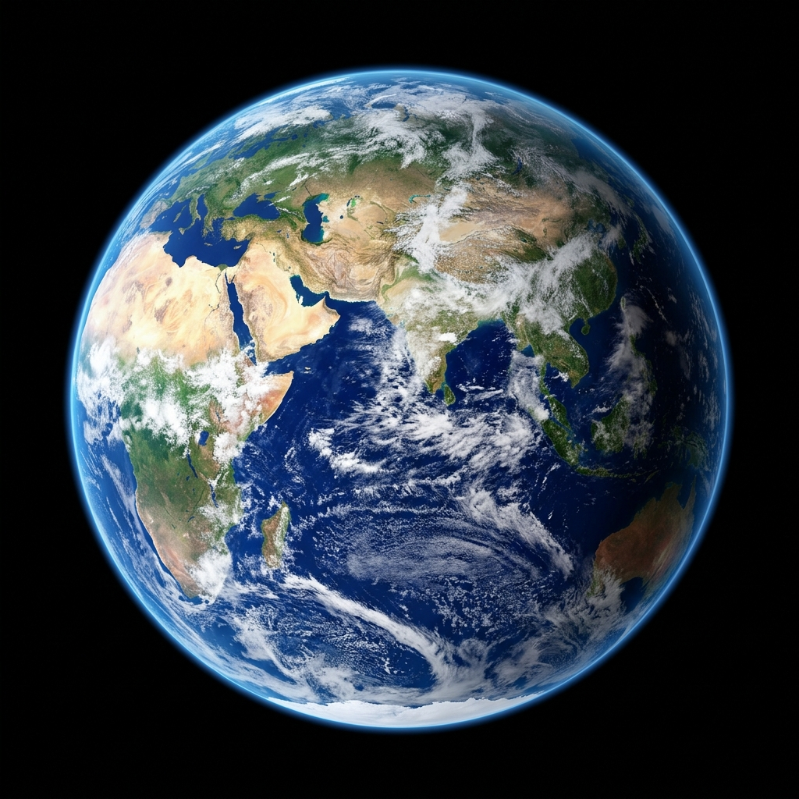
Core Concepts: How radio signals travel at the speed of light. Understanding the minutes-long time delay to Mars.
Activity: Mission Control Telemetry Game to encode simple discovery data with an enforced time delay for the Earth team to decode.
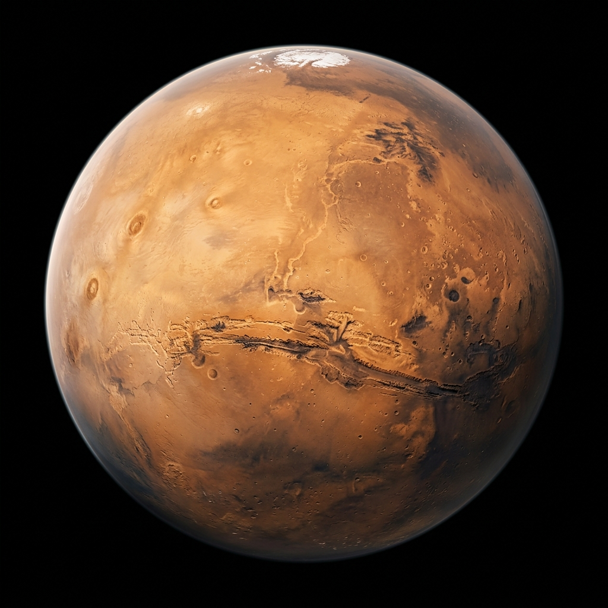
Challenge: An integrated scenario! A dust storm blocks sunlight and power is low. Teams must combine everything they learned to solve the problem and safely send final data back to Earth.
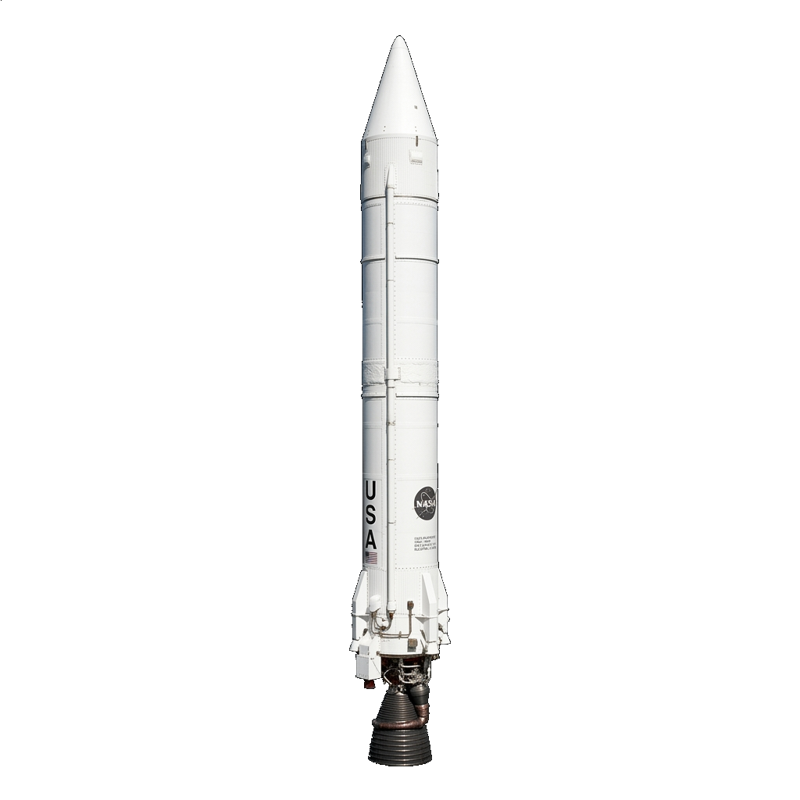
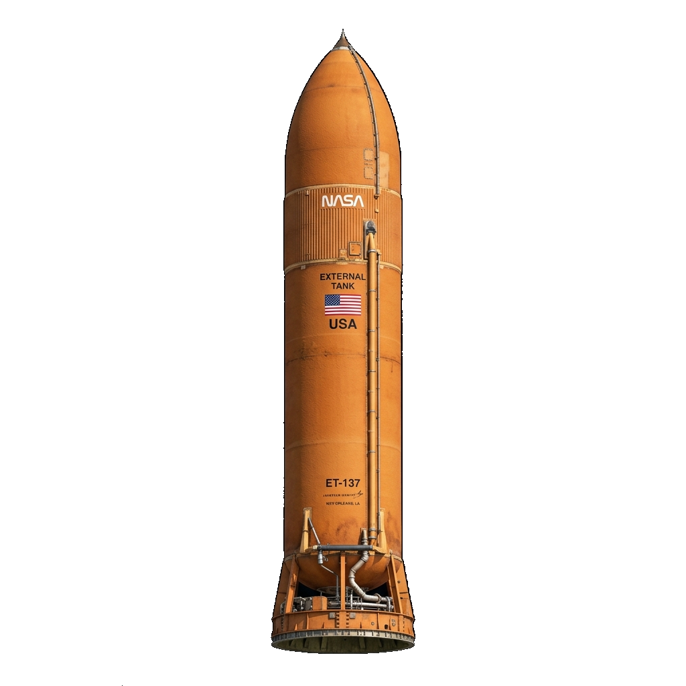
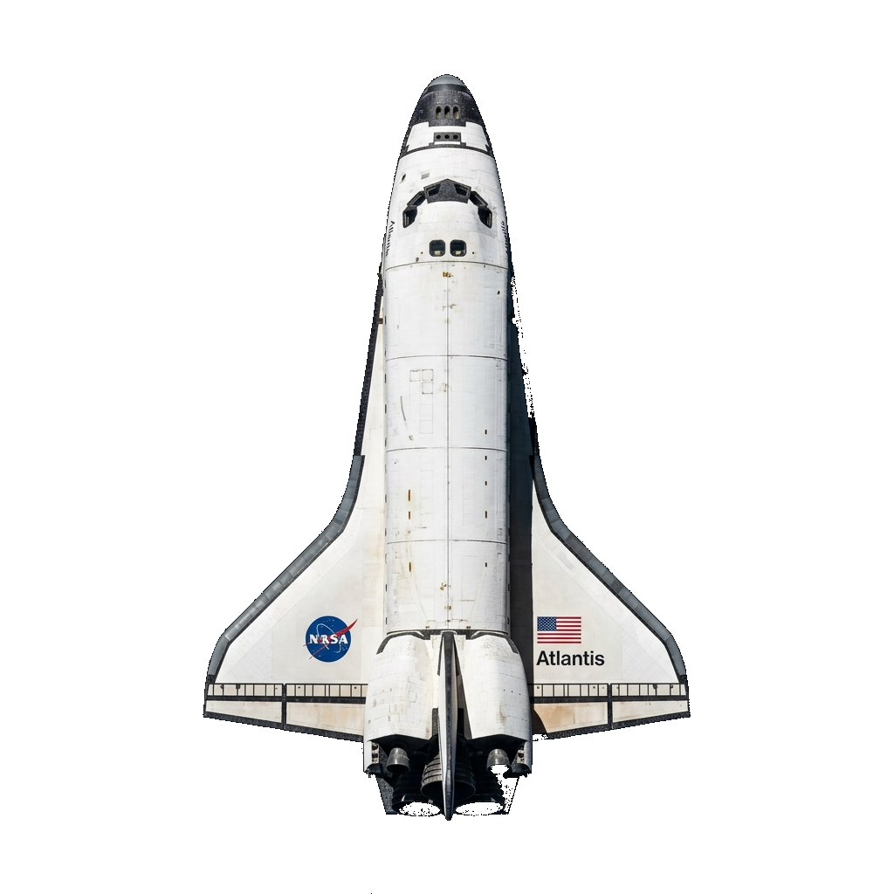
By the end of this interactive journey, students will have gained:
Pondicherry Planetarium (Dr. Abdul Kalam Planetarium)
Making full use of the planetarium's digital dome projector to visually explore the Moon, Mars, and the Solar System.